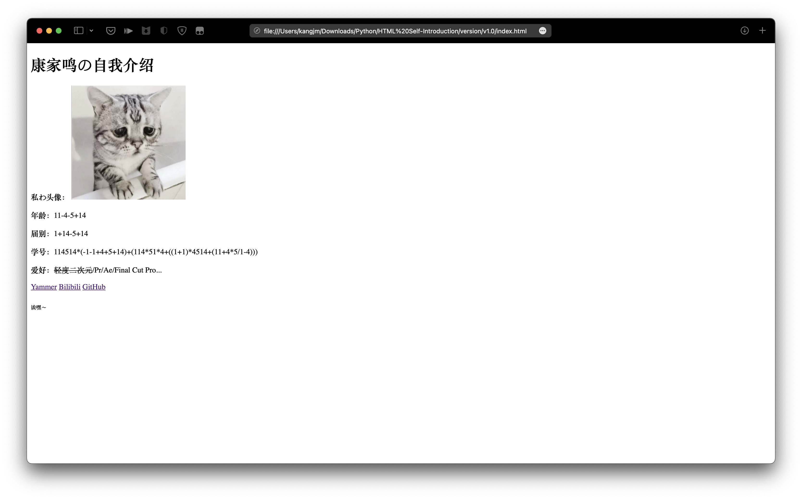
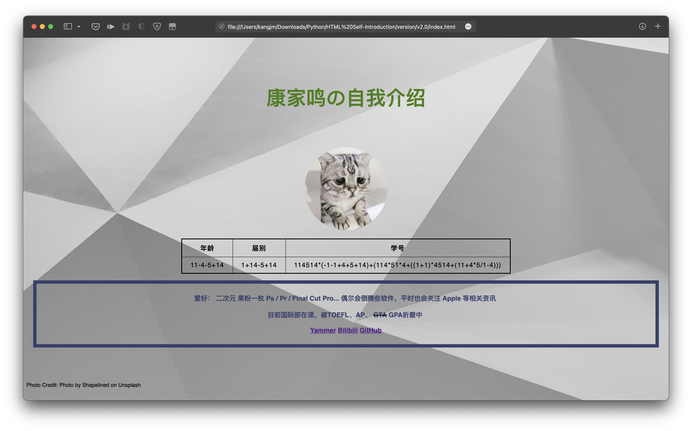
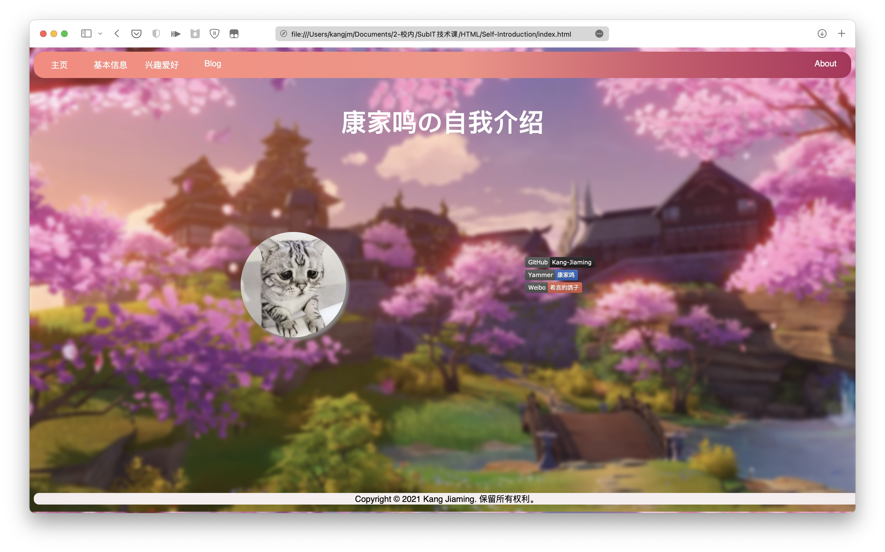
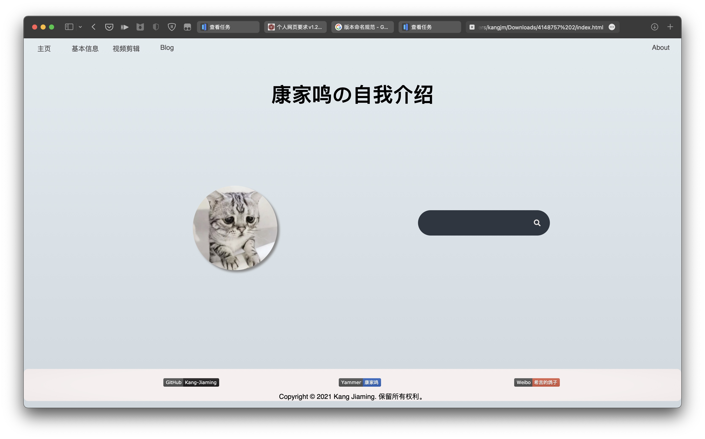

更新日志
1.0.0
初版

2.0.0
新增
- 新增了通过 CSS 样式进行的样式调整
- 新增了表格样式、Border
- 新增了部分自我介绍文本
- 新增了背景图片
- 新增了图片的悬浮提示
调整&修复
- 大量的美观度调整
- 部分字体调整
- 修复了图片尺寸过大的问题

2.1.0
新增
- 新增按钮和多页面设计
- 新增一些个人介绍内容
- 引入了多 CSS 文件
调整&修复

2.2.0
新增
调整&修复
2.2.1
新增
- 新的页面
- 主页搜索框
- mailto 邮件联系按钮
- 更新日志展示
调整&修复
- 图片尺寸过大的问题
- badge 不和谐的问题
- 部分外部链接增加了 target="blank" 属性
已知问题

2.2.2 (RC)
新增
调整&修复
- 全新设计的底栏
- 博客文章列表
- 修复了底栏乱飘的问题
- 视频剪辑页面布局调整

外部资源引用声明